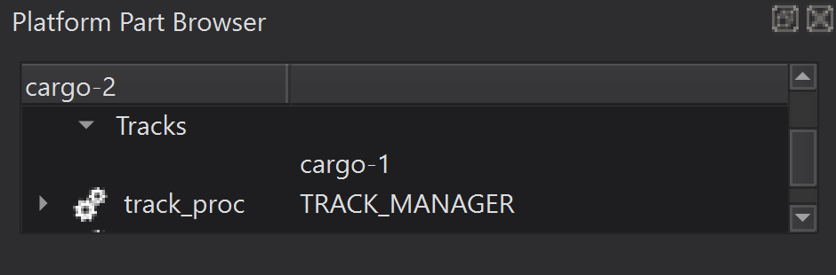
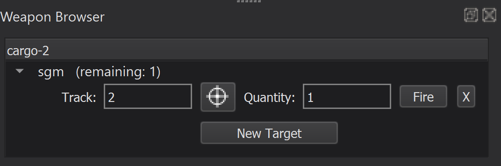

Weapons¶
A weapon is an object with the purpose to destroy or disrupt enemy platforms and systems.
There are two weapon forms implemented within AFSIM:
|
|
An explicit weapon is modeled to physically leave the owning/launching platform and enter the simulation as an independent platform. Examples include bombs and missiles.
An implicit weapon is not modeled to leave the owning platform. Examples include energy weapons such as lasers and jammers. Ballistic weapons such as rockets, artillery and mortars can be modeled as implicit or explicit weapons.
AFSIM provides a number of predefined weapon models, including:
|
|
|
Quick Start¶
A weapon may be defined as follows:
weapon SIMPLE_WEAPON WSF_EXPLICIT_WEAPON
end_weapon
By itself though, a weapon like this is just a skeleton. In order to be useful, it must be implemented as part of a platform type:
platform_type SIMPLE_WEAPON WSF_PLATFORM
weapon self SIMPLE_WEAPON
end_weapon
end_platform_type
Now other platforms and platform types may be armed with this weapon if the following command is added to the platform or platform type definition:
add weapon sgm SIMPLE_GUIDED_MISSILE
quantity 1
end_weapon
At this point, a platform may be equipped with this weapon, but the weapon doesn’t do anything - In other words, it has no effect. To make the weapon effective, create a weapon_effects block, and add it to the weapon’s platform type definition as follows:
weapon_effects HIT WSF_GRADUATED_LETHALITY
radius_and_pk 40 m 0.7
end_weapon_effects
platform_type SIMPLE_WEAPON WSF_PLATFORM
...
weapon_effects HIT
end_platform_type
This defines what the weapon does but not when it will do it. A WSF_AIR_TARGET_FUSE may be added to the weapon’s platform type definition to determine the circumstances in which it will detonate:
processor fuse WSF_AIR_TARGET_FUSE
fuse_function_range 10 m
end_processor
Tip
Multiple fuse models are predefined. This block may specify detonation criteria based on multiple factors, such as distance from target, time of flight, altitude, and more.
The question that now remains, is how the weapon will reach it’s target. For a weapon to seek it’s target, a mover and a targeting processor must be defined in the weapon’s platform type definition:
mover WSF_GUIDED_MOVER
aero WSF_AERO
total_mass 250 kg
fuel_mass 150 kg
specific_impulse 90 sec
thrust_duration 30 sec
end_mover
|
processor targeting WSF_GUIDANCE_COMPUTER
guide_to_truth true
end_processor
|
This weapon is designed to fly directly to the true location of it’s target. It will accelerate while burning fuel, and detonate when it is 10 meters from it’s target, with a high lethality.
This weapon is now ready to fire. From warlock, the user may now directly fire this weapon using Warlock’s weapon browser with the weapon’s owning platform selected. Alternatively, to automate this process the user must define the circumstances under which the weapon will fire. This may require additional behaviors and/or advanced processing. An example implementation of engagement logic is provided in Fire a Weapon at a Track.
Warning
This is a simplistic model of a weapon provided for learning purposes only.
Closer Look¶
Note
The following steps assume that the “simple_flight” scenario is present as discussed in Communications
Currently, the simple_flight scenario is setup such that “cargo-2” will adjust it’s course to accommodate “cargo-1” after receiving a collision warning message over the air traffic control (atc) communications. However, it may be the case that while cargo-1 is friendly, cargo-2 is hostile. The following section will detail the necessary changes and additions to cause cargo-2 to fire a missile at cargo-1 instead of changing it’s route.
Adding Weapons¶
To implement a weapon and provide it to “cargo-2”, complete the following steps:
Open the simple_flight scenario in Wizard.
Create the following files: weapon.txt, cargo_aircraft_mil.txt.
Include weapon.txt and cargo_aircraft.txt in cargo_aircraft_mil.txt and include cargo_aircraft_mil.txt in platform_laydown.txt.
Create a weapon in weapon.txt as follows:
# weapon.txt - CUI # A component of the simple_flight demo weapon_effects PERFECT_HIT WSF_GRADUATED_LETHALITY radius_and_pk 100 m 1 end_weapon_effects platform_type SIMPLE_GUIDED_MISSILE WSF_PLATFORM icon aim-120c weapon_effects PERFECT_HIT weapon self SIMPLE_GUIDED_MISSILE end_weapon processor targeting WSF_GUIDANCE_COMPUTER guide_to_truth true end_processor processor fuse WSF_AIR_TARGET_FUSE fuse_function_range 5 m end_processor mover WSF_GUIDED_MOVER aero WSF_AERO total_mass 250 kg fuel_mass 150 kg specific_impulse 90 sec thrust_duration 30 sec end_mover end_platform_type weapon SIMPLE_GUIDED_MISSILE WSF_EXPLICIT_WEAPON launched_platform_type SIMPLE_GUIDED_MISSILE location 0 5 0 m end_weapon
In cargo_aircraft_mil.txt, implement a new platform type CARGO_AIRCRAFT_MIL, deriving from CARGO_AIRCRAFT as follows:
# cargo_aircraft_mil.txt - UNCLASSIFIED//FOUO # A component of the simple_flight demo # See AAA_ITAR.txt for distribution and usage. include_once cargo_aircraft.txt include_once weapon.txt #include_once behaviors_mil.txt platform_type CARGO_AIRCRAFT_MIL CARGO_AIRCRAFT edit processor task_mgr behavior_tree sequence selector behavior_node all_clear behavior_node entity_detected behavior_node next_selector end_selector selector #behavior_node engage_track #behavior_node weapon_terminated end_selector end_sequence end_behavior_tree end_processor add weapon sgm SIMPLE_GUIDED_MISSILE quantity 1 end_weapon end_platform_type
Notice the commented “include” file and “behavior nodes” in cargo_aircraft_mil.txt. These will be implemented in Fire a Weapon at a Track.
In platform_laydown.txt update the platform definition of cargo-2 to implement CARGO_AIRCRAFT_MIL as follows:
platform cargo-2 CARGO_AIRCRAFT_MIL ... end_platform
Note
As mentioned in Quick Start and alluded to in Step 6, this weapon has everything it needs once fired. To automate a weapon launch/fire, additional processing is needed, as implemented in the next section.
Fire a Weapon at a Track¶
From Warlock, the user may now directly fire this weapon at cargo-1 from Warlock’s Weapon Browser. To fire the weapon manually, complete the following steps:
Run simple_flight in Warlock.
Advance the simulation to time 1000 s.
Select cargo-2.
Open Warlock’s Weapon browser from the View menu.
When a track for cargo-1 is detected click New Target in the Weapon Browser.
|  |  |
{kind=link}
{kind=link}
To choose a target track for the sgm, use the cursor button in the Weapon Browser to select the track on the Map Display, or type the track number directly.
Click Fire in the Weapon Browser to launch the sgm.
Notice that a new platform was created to represent the sgm. It will seek its target and detonate when it arrives.

Notice that cargo-2 does not alter it’s route, despite receiving warnings from cargo-1. This is due to the modified behavior tree, implemented in CARGO_AIRCRAFT_MILs task processor.
This may also be automated by altering the behavior of cargo-2. To automate this process, complete the following steps:
Create a new file behaviors_mil.txt.
Remove the comment in cargo_aircraft_mil.txt to include the new behaviors_mil.txt file.
Add the following behavior definitions to behaviors_mil.txt:
behavior engage_track precondition bool collisionExpected = PLATFORM.AuxDataBool("collisionExpected"); bool trackListEmpty = PLATFORM.TrackList("track_proc").Empty(); WsfWeapon wep = PLATFORM.WeaponEntry(0); return (collisionExpected && !trackListEmpty && wep.QuantityRemaining() > 0); end_precondition execute WsfPlatform plat = PLATFORM; WsfLocalTrack track = plat.TrackList("track_proc")[0]; if (track.Target().IsValid()) { writeln(plat.Name(), " Report: Engage"); writeln("\t- Weapon: ", plat.WeaponEntry(0).Name()); writeln("\t- Track: ", track.TrackId(), "\n"); plat.SetCurrentTarget(track); plat.WeaponEntry(0).Fire(track); } end_execute end_behaviorbehavior weapon_terminated precondition WsfPlatform plat = PLATFORM; WsfTrack targetTrack = plat.CurrentTargetTrack(); return (targetTrack.IsValid() && (PLATFORM.TimeSinceWeaponLastTerminatedFor(targetTrack.TrackId()) > 0)); end_precondition execute WsfPlatform plat = PLATFORM; writeln(plat.Name(), " Report: Weapon Terminated"); writeln("\t- Weapon: ", plat.WeaponEntry(0).Name()); writeln("\t- Track: ", plat.CurrentTargetTrack().TrackId()); writeln("\t- Time: ", TIME_NOW, " s\n"); plat.SetAuxData("collisionExpected", false); end_execute end_behavior
Edit cargo_aircraft_mil.txt to remove the comments in the CARGO_AIRCRAFT_MIL task processor re-definition to enable the engage_track and weapon_terminated behaviors.
With these additions, if simple_flight is simulated in Warlock or Mission, cargo-2 will remain on route despite warnings from cargo-1, and fire its sgm at it’s track when cargo-1 is in range of it’s AIR_RADAR.
Warning
This is a simplistic model of a weapon provided for learning purposes only. Automated behaviors serve the same purpose - provided for learning only - and should not be considered as strategic advice for real-world or simulated operations.
Summary¶
Weapons may be modeled simply, as demonstrated in this module. However, AFSIM supports modeling and simulating weapon behavior in much higher fidelity. Weapons may also include additional features like communications, sensors, and other platform parts as desired.